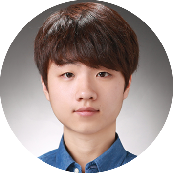

|
suyoung.l [at] kaist [dot] ac [dot] kr Hello, I’m Suyoung Lee. I’m a Ph.D. student at KAIST. I’m currently under the supervision of Prof. Sae-Young Chung at Information Theory and Machine Learning Lab (ITML). I’m interested in reinforcement learning, especially generalization and unsupervised exploration. |
 |
{kind=link}

|
Suyoung Lee, Sae-Young Chung Neural Information Processing Systems (NeurIPS), 2021. pdf / code We train RL agent with imaginary tasks generated from mixtures of learned latent dynamics to generalize to unseen test tasks. |

|
Suyoung Lee, Sungik Choi, Sae-Young Chung Neural Information Processing Systems (NeurIPS), 2019. pdf / code A computationally efficient recursive deep reinforcement learning algorithm that allows sparse and delayed rewards to propagate directly through all transitions of the sampled episode. |
|
Un Chong-Kwan Scholarship Award - for achievement of excellence in 2017 entrance examinaiton, KAIST EE, 2017. Qualcomm-KAIST Innovation Awards 2018 - paper competition awards for graduate students, Qualcomm, 2018. 2019 |
|
2019~ current: Ph.D. in Enelctrical Engineering, KAIST, Daejeon, Korea (advisor: Prof. Sae-Young Chung) 2017~2019: M.S. in Enelctrical Engineering, KAIST, Daejeon, Korea (advisor: Prof. Sae-Young Chung) 2012~2017: B.S. in Enelctrical Engineering, KAIST, Daejeon, Korea 2010~2012: Hansung Science High School, Seoul, Korea |
|
2018 spring : TA, EE405 Electronics Design Lab. Network of Smart Systems, KAIST. 2018 fall : TA, EE807 Special Topics in Electrical Engineering. Deep Reinforcement Learning and AlphaGo, KAIST. 2019 spring : TA, EE405 Electronics Design Lab. Network of Smart Things, KAIST. 2019 fall : TA, EE105 Electrical Engineering: Changing the World, KAIST. 2020 spring : TA, EE210 Probability and Introductory Random Processes, KAIST. 2020 fall : TA, EE326 Introduction to Information Theory and Coding, KAIST. |
|
Conference reviewer: ICML 2021, NeurIPS 2021 |
|
Website template from here. |